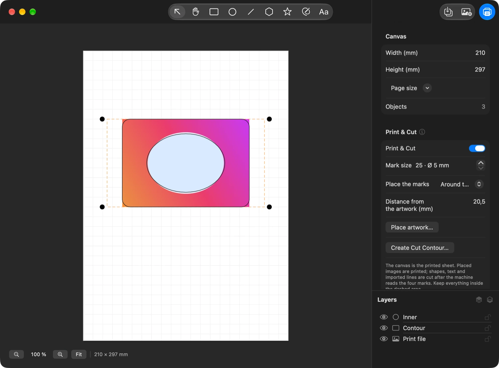
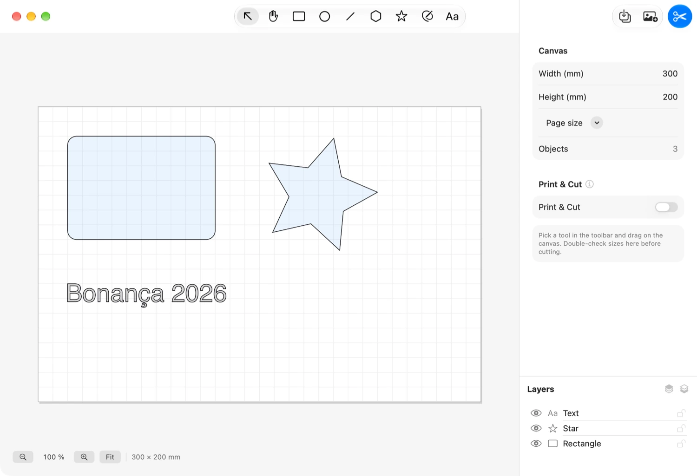
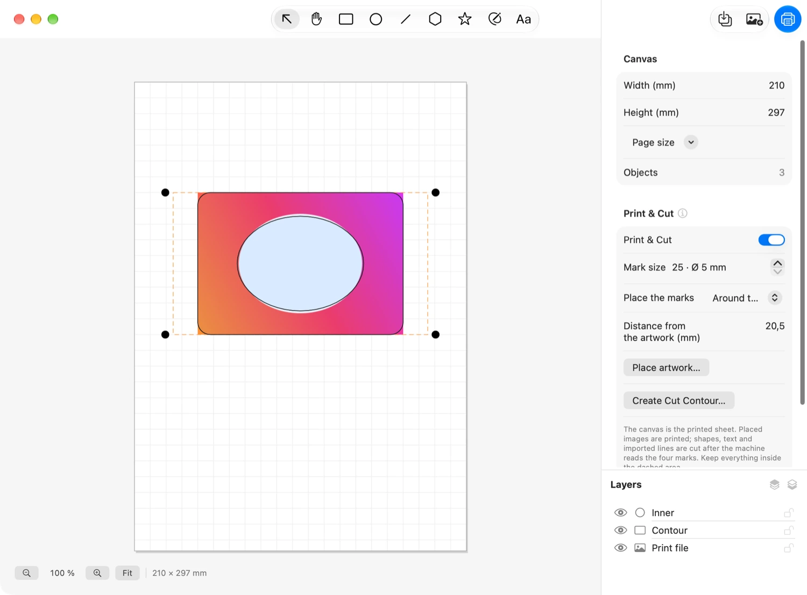
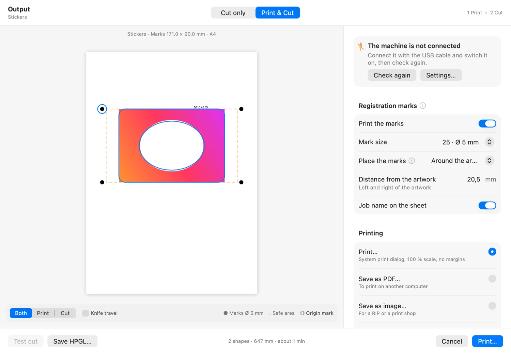
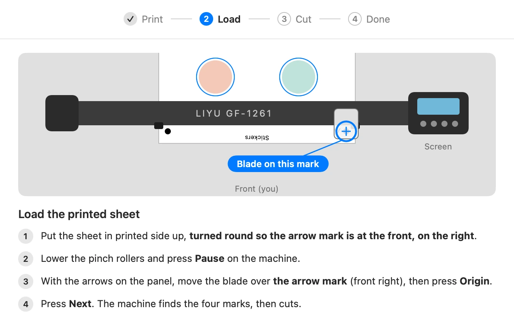
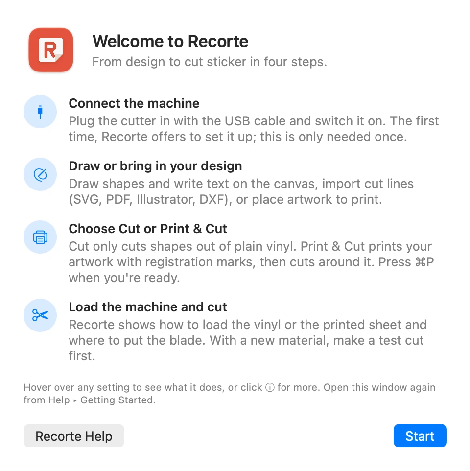

01
Draw or import
Recorte opens on an empty canvas. Draw shapes, write text, or bring in Illustrator, PDF, SVG and DXF files as cut lines.
Cutting studio for macOS
Recorte is a native macOS app for vinyl cutters, made for designers. Draw or import your artwork, press ⌘P, and it walks you through loading the machine. Print & Cut included, with no Windows VM.

01
Recorte opens on an empty canvas. Draw shapes, write text, or bring in Illustrator, PDF, SVG and DXF files as cut lines.
02
Choose the size, copies and material, then follow the steps on screen to load the vinyl and set the origin.
03
Print with four registration marks on any printer. The cutter's camera finds them and cuts around the print.
Features
Rectangle, ellipse, line, polygon, star, freehand and text tools, with every size in millimetres. Text is converted to outlines when cutting, and layers can be hidden or locked.
.recorte files
Place a PDF, Illustrator, PNG or JPEG file and Create Cut Contour traces its outline at the distance you choose. The marks go around the artwork or at the page edges, and turn red if they fall off the page.

The preview shows the sheet with its marks, the safe area and where the cut starts. Print directly, save a PDF or an image for a print shop, or skip printing when the sheet is already printed.

After you press Cut, Recorte draws the machine and shows where the sheet goes, where the blade starts and which button to press. If the marks aren't found, you try again with the same sheet, with no reprint.

Recorte finds the cutter on USB and sends the job straight to it. It only sends to the cutter's own USB ID, so a job never goes to a printer by mistake.
The same steps, with plainer names. Help tags give the SignMaster name for each setting.
Hover over any setting to see what it does, or click ⓘ for a short explanation with a drawing.
Standard and thick vinyl, heat-transfer vinyl, flock, cardstock and reflective, as starting points for a test cut.
English, Portuguese, French and Spanish. Recorte follows the language of your Mac.
A safe connection check and a log file you can send to support when the machine doesn't respond.
How it works
Plug the cutter in with the USB cable and switch it on. No driver and no printer setup.
Draw shapes and write text on the canvas, import cut lines, or place artwork to print.
Cut only cuts shapes out of plain vinyl. Print & Cut prints your artwork with registration marks, then cuts around it. Press ⌘P when you're ready.
Recorte shows how to load the vinyl or the printed sheet and where to put the blade. With a new material, make a test cut first.

Cutters
Cut and Print & Cut over USB. The jobs Recorte sends match SignMaster's byte for byte.
They may work, but nobody has tried them. If you own one, tell us how it goes.
Recorte includes a serial-port transport for HPGL cutters. Each machine still needs to be checked with someone who owns it.
Cutter makers rarely publish how their machines talk, so each new model starts with information from someone who owns one. Open a request on GitHub and include:
Requests that come with a job file and someone willing to test move fastest.
Support
In the app, choose Help ▸ Report a Problem…, or open an issue on GitHub.
Open an issueConnecting, cutting, Print & Cut, speed and pressure, and a troubleshooting table. The same page opens from the app's Help menu.
Open the help pageRecorte is made by CookieBytes, a small studio in Portugal. Write to us in English or Portuguese.
hello@cookiebytes.ptEarly development. Not every feature has been tried on the machine yet. The app isn't notarised yet either: the first time you open it, right-click it and choose Open.
Unzip it and move Recorte to Applications. Needs macOS 14 or later.
The source is on GitHub under the MIT licence with the Commons Clause: use it, study it and change it, but don't sell it.